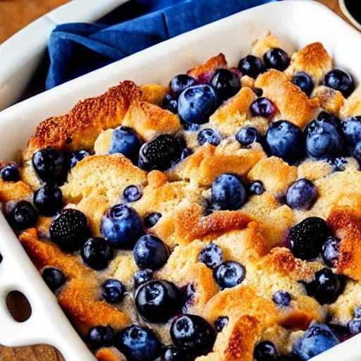

Pouding au pain
Préparation: —
Cuisson: 40 minutes
Total: —
Ingrédients
-
1 L de lait

-
4 œufs
-
2/3 t de sucre
-
vanille
-
10 tranches de pain coupées en morceaux
-
1 grand casseau de bleuets
Instructions
Les quantités sont approximatives. Il doit y avoir assez de lait et d'œufs pour recouvrir la majorité des morceaux de pain.
Préchauffer le four à 180 °C (350 °F).
Graisser un grand bol allant au four. Verser 1 L de lait et chauffer au four une dizaine de minutes.
Dans un petit bol, mélanger à la fourchette :
- 4 œufs
- 2/3 t de sucre
- vanille
Ajouter le mélange d'œufs au lait chaud, brasser, puis ajouter rapidement :
- 10 tranches de pain coupées en morceaux
- 1 grand casseau de bleuets
Cuire au four pendant environ 40 minutes.
Notes
Vous pouvez faire ce pouding avec n'importe quels petits fruits. C’est très bon avec des bleuets, des fraises et des framboises !